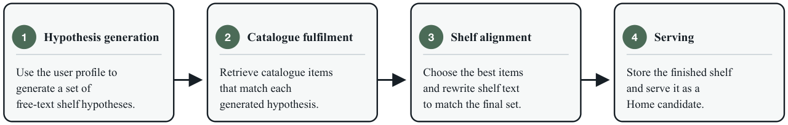

Hypothesis-Driven Shelf Generation for Personalised Recommendation (面向个性化推荐的假设驱动货架生成)
- 会议/期刊: ACM RecSys 2026 (Industry Track)
- 作者与机构: Aleksandr V. Petrov, Tarun Chillara, Mounia Lalmas, Aloïs Gruson 等，Spotify
- 推荐链路定位: 端到端生成式（离线批量生成货架候选，注入 Home 排序池）
- 研究方向: 生成式推荐 / 大语言模型推荐
- 论文原文: arXiv:2607.25823v1
- 开源代码: 暂未开源
TL;DR (1分钟核心速览)
Spotify Home 的货架长期依赖手工模板 + 专用召回逻辑，无法覆盖长尾个体品味。本文把货架生成重构为"生成自然语言货架假设 → 约束生成式检索履约 → LLM 货架对齐 → 离线预计算服务"四阶段流水线，用假设作为规划与召回的中间表示。离线 LLM-as-a-Judge 显示生成式检索履约全面超越 BM25/MiniLM/混合基线（Overall 0.71 vs 0.56），货架对齐使整体质量从 0.71 升至 1.27（+78%）；Home 均匀随机曝光下专辑池 30 秒流播放率相对最强经典货架 +36%。
Background & Motivation (背景与核心矛盾)
- 主流范式: 工业推荐界面以"货架"（横向主题行）组织内容，生产系统用有限的手工模板 + 专属召回逻辑实现，每个模板隐式耦合"满足什么需求 / 什么内容算合格 / 用哪套系统填充"三个决策。
- 前人局限: ① 模板对广谱、复现性意图（最近收听、全球新发）有效，但对"流派×年代×场景×情绪×熟悉度×市场×媒介"的组合长尾不可维护；② 语言驱动推荐（Text2Tracks 等）均从用户手写 prompt 出发直接检索，缺少从行为画像自动推断货架概念、并把概念作为可评估中间表示的机制。
- 核心洞察 (Key Insight): 货架标题不只是 UI 标签，而是对"为何这些物品属于同一行"的语义承诺；因此货架质量是集合级而非逐点级的——单条物品合理，整行仍可能不连贯或标题过度承诺。
- 本文切入点: 引入
h=(q,c,f,r,t0,d0)货架假设作为规划与履约之间的"契约"，把"该有什么货架"与"用什么物品实现"彻底解耦，各自独立优化与独立评估。
Method (核心方法设计)
1. 整体框架 (Overall Architecture)
系统对符合条件的用户做每日离线批处理：Stage 1 由用户画像 \(p_u\)（近期收听、长期偏好、市场、熟悉内容、播客行为）生成若干货架假设；Stage 2 仅以假设（不含完整画像）为条件，通过约束生成式检索产出候选 URI；Stage 3 由 LLM 选出最终\(k\) 条并重写标题/副标题，使可见承诺与物品集合一致；Stage 4 将成品货架作为 Home 排序候选预计算落库，与既有货架在同一排序器中竞争，服务时零额外延迟、无在线 LLM 推理。该分解使每阶段产出稳定中间产物，可独立替换与消融。
flowchart TD
A["用户画像 p_u（收听/播客/市场）"] --> B["Stage1 假设生成（蒸馏小模型）"]
B --> C["货架假设 h=(q,c,f,r,t0,d0)"]
C --> D["Stage2 约束生成式检索（SemID + Trie 约束解码）"]
D --> E["Stage3 候选选择与货架对齐（LLM 重写标题）"]
E --> F["Stage4 离线预计算 → Home 排序候选"]
2. 关键设计拆解 (Key Designs)
-
货架假设作为规划中间表示：痛点在于模板把"意图—内容—召回"绑死。本文将假设定义为结构化契约 \(h=(q,c,f,r,t_0,d_0)\)，其中\(q\)为自由文本货架概念、\(c\)内容类型、\(f\)熟悉度、\(r\) 路由约束（市场/新鲜度）。它既足够表达长尾品味（如"带管弦乐质感的冰川氛围后摇"），又足够结构化以约束检索与分阶段评估。生产上用前沿 LLM 批处理生成，再蒸馏为紧凑开源 LLM 部署于 GPU 批集群，800 用户画像上师生 Overall 评分 78.3% vs 78.2%，几乎无损。
-
约束生成式检索履约：痛点在于货架概念常通过风格联想、文化语境表达，词面/嵌入相似度无法恢复目录关联。履约模型在开源 LLM 词表上扩展 Spotify 目录的 Semantic IDs，直接生成离散标识符而非全库打分；解码时用按内容类型（专辑/艺人/编辑歌单/播客节目/单集）构建的 Trie 索引做约束解码，保证生成 ID 必为合法目录实体；熟悉货架则用用户已消费实体即时构建 Trie。生成 ID 再解析为 URI 并按类型一致性、历史收听、熟悉度过滤。
-
货架对齐与训练/推理开销：履约只保证单条相关，标题仍可能过度承诺。Stage 3 以假设、草稿标题、候选元数据为输入，由 LLM 联合选择最终 \(k\)条并重写\(t,d\)，目标为物品相关性、集合连贯性、多样性与标题承诺履约的平衡。全流程离线批处理，在线仅查表，故可用更大候选集与后处理；代价是货架更新粒度为天级，无法实时响应用户行为漂移。
Experimental Setup & Evaluation Protocol (实验设置与评估协议)
- 评估范式: 因任务无金标准离线目标（非对固定货架库排序），采用分阶段 LLM-as-a-Judge（0–2 三级量表，降低评分漂移、提升人机一致性），并以线上行为为最终判据。
- 数据规模与划分: 履约对比使用 1,000 用户 cohort 上的 10,000 条货架假设；对齐分析为对齐前 10,000 条货架 vs 对齐后 16,000+ 条生产货架（无共享 shelf ID，故用双侧 Welch 独立样本 \(t\)检验 + Bonferroni 校正，8 维度，*** 表示校正后\(p<0.001\)）；履约对比对 24 个"方法×维度"比较做 Bonferroni 校正。
- 排名/打分协议: 离线为集合级 rubric 打分（非 Full-Ranking / Sampled Ranking）；线上采用均匀随机曝光（uniform random exploration），请求级随机化货架顺序以剥离生产排序器的位置偏置，报告 30 秒流播放率（百分点，95% bootstrap CI）。
- 对比基线: 履约阶段为 BM25、MiniLM 稠密检索、BM25+MiniLM 等权线性插值（\(\alpha=0.5\)），均在假设指定内容类型内履约；线上为各内容类型 shuffle pool 中的经典生产货架族。
Key Experimental Results (实验关键数据)
1. 主实验对比 (Main Results)
表 1：目录履约质量（Hypothesis-to-Shelf Judge，0–2 分，10k 次 bootstrap 95% CI）
| 方法 | Overall | Style | Relev. | Coher. | Coverag. | Compl. | Divers. | Title |
|---|---|---|---|---|---|---|---|---|
| BM25 | 0.56 | 0.87 | 0.84 | 0.93 | 0.92 | 0.75 | 1.06 | 0.54 |
| Dense (MiniLM) | 0.39 | 0.67 | 0.65 | 0.73 | 0.78 | 0.61 | 0.94 | 0.37 |
| Hybrid (\(\alpha\)=0.5) | 0.49 | 0.78 | 0.76 | 0.82 | 0.92 | 0.74 | 1.06 | 0.46 |
| Generative Retrieval | 0.71 | 0.99 | 1.04 | 1.05 | 1.15 | 1.28 | 1.39 | 0.66 |
| Improv. vs 最强基线 | +26.8% | +13.8% | +23.8% | +12.9% | +25.0% | +70.7% | +31.1% | +22.2% |
表 2：Home 均匀随机曝光（30 秒流播放率 %，95% bootstrap CI）
| 内容类型 | 假设驱动 (%) | 最强经典 (%) | 池内排名 | Δ(%) |
|---|---|---|---|---|
| Album | 1.20 ± 0.13 | 0.88 ± 0.09 | 1 / 10 | +36% |
| Artist | 0.82 ± 0.17 | 0.89 ± 0.06 | 2 / 9 | −8% |
| Playlist | 0.92 ± 0.09 | 1.07 ± 0.07 | 5 / 15 | −14% |
| Show | 0.92 ± 0.31 | 1.57 ± 0.11 | 2 / 6 | −41% |
| Episode | 0.63 ± 0.20 | 0.62 ± 0.08 | 1 / 7 | +2% |
2. 消融实验 (Ablation Study)
表 3：Stage 3 货架对齐前后对比（Hypothesis-to-Shelf Judge，0–2 分）
| 指标 | Pre-Alignment | Post-Alignment | Δ(%) |
|---|---|---|---|
| Overall | 0.71 ± 0.02 | 1.27 ± 0.01 | +78%* |
| Style Match | 0.99 ± 0.01 | 1.51 ± 0.01 | +52%*** |
| Item Relevance | 1.04 ± 0.01 | 1.58 ± 0.01 | +52%*** |
| Shelf Coherence | 1.05 ± 0.01 | 1.64 ± 0.01 | +56%*** |
| Hypothesis Coverage | 1.15 ± 0.01 | 1.37 ± 0.01 | +19%*** |
| Completeness | 1.28 ± 0.02 | 1.46 ± 0.01 | +14%*** |
| Diversity | 1.39 ± 0.01 | 1.74 ± 0.01 | +25%*** |
| Title Promise | 0.66 ± 0.02 | 1.31 ± 0.01 | +99%* |
表 4：Stage 1 假设质量（User-to-Hypothesis Judge）与蒸馏一致性
| 项目 | 分数 / 结果 |
|---|---|
| Overall | 1.59 ± 0.01 |
| Hypothesis Specificity | 1.99 ± 0.00 |
| Title Quality | 1.76 ± 0.01 |
| Personalisation Depth | 1.45 ± 0.01 |
| Discovery Potential | 1.31 ± 0.01 |
| 按内容类型：Album / Artist / Playlist | 1.90 / 1.98 / 1.86 |
| 按内容类型：Show / Episode | 0.66 / 0.51 |
| 蒸馏师生一致性（800 用户） | 78.3% vs 78.2% |
3. 关键实验发现 (Key Findings)
- 履约瓶颈在"语义联想"而非"词面匹配"：生成式检索在 Completeness（+70.7%）与 Diversity（+31.1%）上增益最大，说明货架概念常需目录中弱标注的关联知识；BM25 在元数据描述丰富、与假设措辞高度重合的内容类型上更具竞争力，一旦概念以风格/文化语境间接表达即迅速退化。
- 对齐阶段是"标题承诺"的救命环节：Title Promise 从 0.66 翻倍至 1.31（+99%），远超 Coverage（+19%）与 Completeness（+14%），证明检索质量本身不是货架成败的充分条件——集合级连贯与文本-物品一致性需单独优化，且该增益在全部内容类型上一致成立（图 3）。
- 线上收益高度内容类型依赖：专辑池排名第 1（+36%）、单集池第 1（+2%），但播客节目池落后最强经典货架 41%，与离线 Show/Episode 假设质量仅 0.66/0.51 相互印证——语音内容的假设生成是当前主要短板，而非履约或对齐。
Highlights & Limitations (亮点、对比与审稿批判)
- 与代表作对比 (vs. Prior Work): 相较多列表推荐（固定货架集上做 bandit 个性化）与 Text2Tracks/Text2Playlist（用户手写 prompt 直接检索），本文自动从画像推断货架概念并以其为中间表示；相较 TIGER 类 SemID 生成式检索以完整用户画像为条件，本文履约刻意剥离画像，只解假设，从而获得可分解、可独立评估的工程优势。
- 可迁移亮点: ① "结构化假设 + 约束 Trie 解码"可在任何需要可控生成式召回的品类（电商主题会场、短视频合集）复用；② 分阶段 LLM-as-a-Judge rubric 与"中间产物即评估边界"的设计，为无金标准生成式推荐提供了可操作的离线评估范式。
- 审稿级局限批判: ① 离线结论完全建立在 LLM 评审之上，缺少人评一致性量化与评审偏置分析，且对齐前后为非配对独立样本，+78% 的效应量含队列差异风险；② 线上仅报告池内描述性比较而非合并因果效应，且天级离线预计算无法响应用户实时兴趣漂移，Show 池 −41% 也暴露了语音场景的实质性缺口。
Rating (四维评分)
- 方法创新性 (Novelty): ⭐⭐⭐⭐ （"货架假设"作为规划-履约契约的分解思路在工业界新颖且自洽，但各组件技术均为已有范式组合）
- 评估协议与实验扎实度 (Protocol & Experiments): ⭐⭐⭐ （分阶段评估设计精巧、统计校正到位，但缺人评校验、对齐对比非配对、线上仅描述性池内比较）
- 写作与数学规范度 (Clarity & Rigor): ⭐⭐⭐⭐ （四阶段职责/失败模式/评估钩子表格化清晰，公式极简；代价是核心机制缺少定量建模细节）
- 工业落地与复现价值 (Industrial & Practical Value): ⭐⭐⭐⭐ （真实生产部署、零在线延迟、蒸馏保 parity，工程价值高；但未开源且强依赖 Spotify 目录与 SemID 基建）